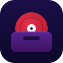

Crate
Dig into any song. Open with the Crate button or Alt+Shift+C.
CRATE SERVER
Checking…
PREFERENCES
Use your own API keys (optional)
Not needed when the Crate server is connected. Your own keys take priority if you add them, which is handy for development or if the server is down.
GENIUS Optional
Samples, interpolations, meanings, base credits.
- Go to genius.com/api-clients and sign in.
- Click New API Client (any name; your GitHub URL works as the website).
- Click Generate Access Token and paste it here.
GETSONGBPM Optional
BPM, key, Camelot and time signature.
- Sign up at getsongbpm.com/api. It asks for a site URL, so use your GitHub page.
- Copy the API key from the email they send and paste it here.
YOUTUBE Optional
Most-viewed covers with real view counts.
- Open YouTube Data API v3 in Google Cloud (make a free project if asked) and click Enable.
- Go to APIs & Services → Credentials → Create credentials → API key.
- Optional but smart: restrict the key to the YouTube Data API.
MusicBrainz and Wikipedia are free and need no keys. If you add your own keys, they stay in Chrome sync storage and are only sent to the service they belong to. Crate collects no personal data.